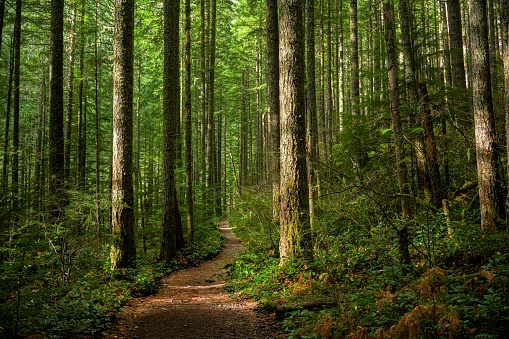
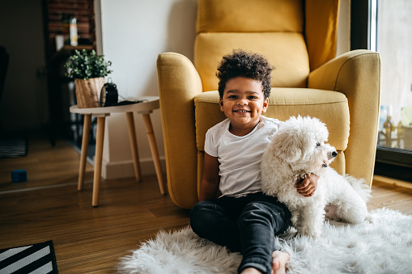

- Family Album
- Weddings
- Graduation
- Pregnancy Shoots
- Special Occassions
- Funerals
- Nature Album
- Sunsets
- Oceans
- Sunrise
- The woods 
- Animals Album
- Pets 
- Jungle kings
Man by nature is a social being. The family is the basic unit that depicts this character. Keeping photographs that remind you of the wonderful or sad moments throughout your life helps one appreciate life changes. For this album, I have included the following pics;


This has a collection of photos depicting different times/seasons to portray the beauty of our natural environment. These sceneries provide people with calming effects. Stressed out? go for a nature walk through the woods, relax at the beach or watch the sunset. It has;

Ever heard the saying that "a dog is man's most loyal friend"? Well, pets enrich our lives in many ways. This album has two classes;